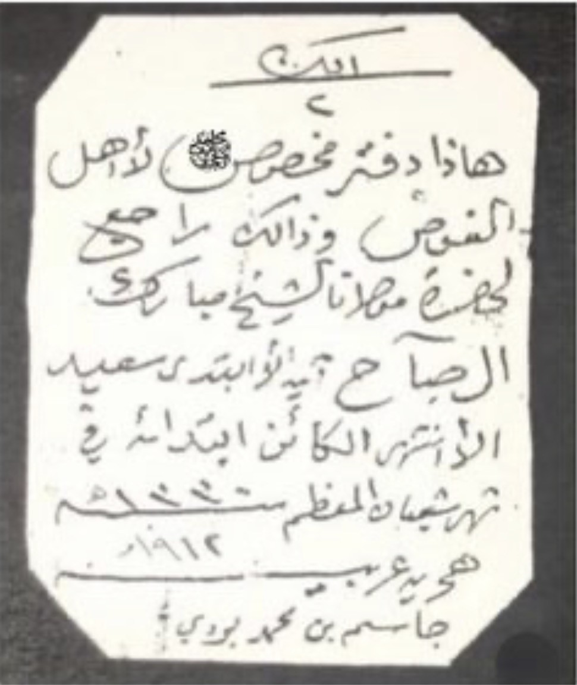
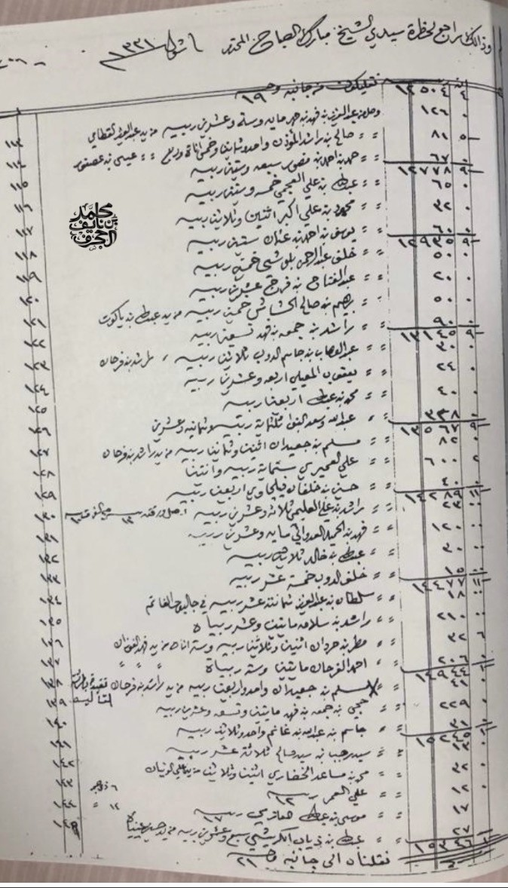

٦ شوال، في الدفتر الذي بدأ في شعبان ١٩١٢م · دفتر مخطوط مخصص لأهل الغوص راجع للشيخ مبارك الصباح (الغلاف وصفحة)
رسوم غوص وصلت من يد عبدالوهاب القطامي، في دفتر الغوص للشيخ مبارك الصباح
ما هي
على الغلاف: «هاذا دفتر مخصص لأهل الغوص وذالك راجع لحضرة مولانا الشيخ مبارك الصباح»، ابتداؤه في شهر شعبان المعظم، وتحته ١٩١٢م، وفي آخره اسم كاتبه جاسم بن محمد. وفي الصفحة المؤرخة ٦ شوال، وعنوانها «وذلك راجع لحظة سيدي الشيخ مبارك الصباح المحترم»، قائمة بالمبالغ الواصلة من كل طاقم، منقولة من الجانب ٦٩. وأول سطر فيها: وصلنا عبدالعزيز بن فهد مائة وستة وعشرين ربية «من يد عبدالوهاب القطامي».
أهميتها
عبدالوهاب القطامي يسلّم رسوم موسم الغوص للشيخ مبارك الصباح، في دفتر كُتب في ديوان الشيخ.
صور الصفحات


أسماء أخرى
المصادر
دفتر الشيخ مبارك الصباح المخصص لأهل الغوص، شعبان ١٩١٢م، الغلاف وصفحة ٦ شوال؛ الصورة من نشر حامد بن نايف الحجي
كيف كُتب هذا النص: لا نعرف بعد أي عبدالوهاب القطامي هو، لذلك لم يُربط بشخص في الشجرة. وسنة الهجرة في الصفحات غير واضحة، والغلاف يذكر ١٩١٢م.
افتح في الموقع التفاعلي